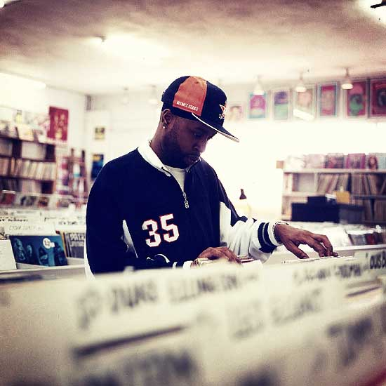

"James Dewitt Yancey, better known by the stage names J Dilla and Jay Dee, was an American record producer who emerged from the mid-1990s underground hip-hop scene in Detroit, Michigan. According to his obituary at NPR.org, he "was one of the music industry's most influential hip-hop artists, working for big-name acts including A Tribe Called Quest, De La Soul, Busta Rhymes, The Pharcyde and Common." Yancey died in 2006 of the blood disease Thrombotic thrombocytopenic purpura."
J Dilla on Wikipedia
J Dilla
James Dewitt Yancey (February 7, 1974 — February 10, 2006)

 If you were to secretly ask the most praised hip-hop producers, if given a top three, who they fear the most, Dilla’s name would chart on everyone’s list, hands down.
If you were to secretly ask the most praised hip-hop producers, if given a top three, who they fear the most, Dilla’s name would chart on everyone’s list, hands down.
- Questlove
|
I can't begin to explain the influence his mind and ear has had on my band, myself, and the careers of so many other artists. The most humble, modest, worthy and gifted beatmaker I've known...and definitely the best producer on a mic.
- Black Thought
|
 He was one of the greatest, man. He was the greatest to ever do it, for the new cats. And for his mother to tell me that I was his favorite producer – I was like ‘Wow, that’s dope, man.
He was one of the greatest, man. He was the greatest to ever do it, for the new cats. And for his mother to tell me that I was his favorite producer – I was like ‘Wow, that’s dope, man.
- Pete Rock
|